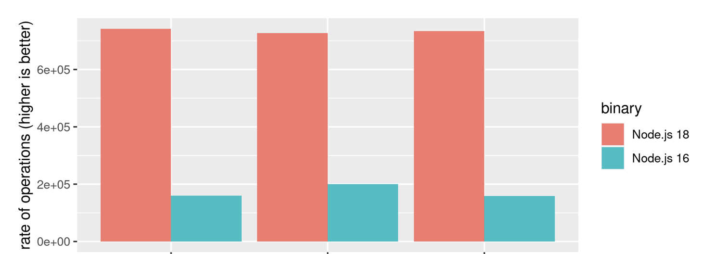
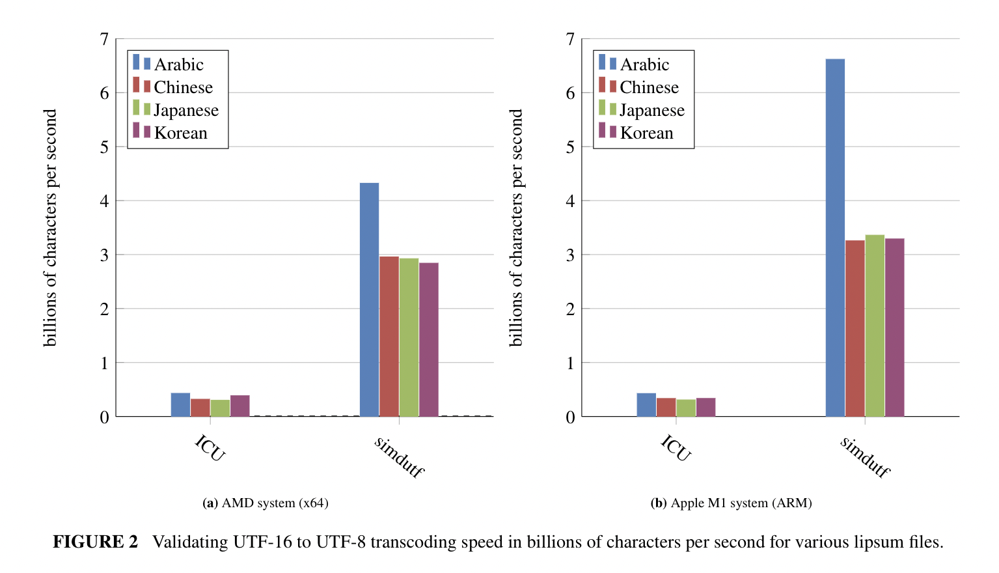

|
simdutf 9.0.0
Unicode at GB/s.
|
|
simdutf 9.0.0
Unicode at GB/s.
|
Please visit https://github.com/simdutf/simdutf for source code and issue tracking!
Most modern software relies on the Unicode standard. In memory, Unicode strings are represented using either UTF-8 or UTF-16. The UTF-8 format is the de facto standard on the web (JSON, HTML, etc.) and it has been adopted as the default in many popular programming languages (Go, Zig, Rust, Swift, etc.). The UTF-16 format is standard in Java, C# and in many Windows technologies.
Not all sequences of bytes are valid Unicode strings. It is unsafe to use Unicode strings in UTF-8 and UTF-16LE without first validating them. Furthermore, we often need to convert strings from one encoding to another, by a process called transcoding. For security purposes, such transcoding should be validating: it should refuse to transcode incorrect strings.
This library provide fast Unicode functions such as
The functions are accelerated using SIMD instructions (e.g., ARM NEON, SSE, AVX, AVX-512, RISC-V Vector Extension, LoongSon, POWER, etc.). When your strings contain hundreds of characters, we can often transcode them at speeds exceeding a billion characters per second. You should expect high speeds not only with English strings (ASCII) but also Chinese, Japanese, Arabic, and so forth. We handle the full character range (including, for example, emojis).
The library compiles down to a small library of a few hundred kilobytes. Our functions are exception-free and non allocating. We have extensive tests and extensive benchmarks.
We have exhaustive tests, including an elaborate fuzzing setup. The library has been used in production systems for years.
If using C++23 or newer, there is experimental support for using the library at compile time (constexpr).
The simdutf library is used by:
The adoption of the simdutf library by the popular Node.js JavaScript runtime lead to a significant performance gain:
Decoding and Encoding becomes considerably faster than in Node.js 18. With the addition of simdutf for UTF-8 parsing the observed benchmark, results improved by 364% (an extremely impressive leap) when decoding in comparison to Node.js 16. (State of Node.js Performance 2023)

Over a wide range of realistic data sources, the simdutf library transcodes a billion characters per second or more. Our approach can be 3 to 10 times faster than the popular ICU library on difficult (non-ASCII) strings. We can be 20x faster than ICU when processing easy strings (ASCII). Our good results apply to both recent x64 and ARM processors.
To illustrate, we present a benchmark result with values are in billions of characters processed by second. Consider the following figures.


If your system supports AVX-512, the simdutf library can provide very high performance. We get the following speed results on an Ice Lake Intel processor (both AVX2 and AVX-512) are simdutf kernels:

Datasets: https://github.com/lemire/unicode_lipsum
Please refer to our benchmarking tool for a proper interpretation of the numbers. Our results are reproducible.
-march=rv64gcv as a compiler flag when using a version of GCC or LLVM which supports these extensions (such as GCC 14 or better). The command CXXFLAGS=-march=rv64gcv cmake -B build may suffice.We made a video to help you get started with the library.

Linux or macOS users might follow the following instructions if they have a recent C++ compiler installed and the standard utilities (wget, unzip, etc.)
Pull the library in a directory
You can replace wget by curl -OL https://... if you prefer.
Compile
./amalgamation_demo
We strongly discourage working from our main git branch. You should never use our main branch in production. Use our releases. They are tagged as vX.Y.Z.
Visual Studio users must specify whether they want to build the Release or Debug version.
To use the library as a CMake dependency in your project, please see tests/installation_tests/from_fetch for an example.
You may also use a package manager. E.g., we have a complete example using vcpkg.
You can create a single-header version of the library where all of the code is put into two files (simdutf.h and simdutf.cpp). We publish a zip archive containing these files, e.g., see https://github.com/simdutf/simdutf/releases/download/v9.0.0/singleheader.zip
You may generate it on your own using a Python script.
We require Python 3 or better.
Under Linux and macOS, you may test it as follows:
When creating a single-header version, it is possible to limit which features are enabled. Then the API of library is limited too and the amalgamated sources do not include code related to disabled features.
The script singleheader/amalgamate.py accepts the following parameters:
--with-utf8 - procedures related only to UTF-8 encoding (like string validation);--with-utf16 - likewise: only UTF-16 encoding;--with-utf32 - likewise: only UTF-32 encoding;--with-ascii - procedures related to ASCII encoding;--with-latin1 - convert between selected UTF encodings and Latin1;--with-base64 - procedures related to Base64 encoding, includes 'find';--with-detect-enc - enable detect encoding.If we need conversion between different encodings, like UTF-8 and UTF-32, then these two features have to be enabled.
The amalgamated sources set to 1 the following preprocessor defines:
SIMDUTF_FEATURE_UTF8,SIMDUTF_FEATURE_UTF16,SIMDUTF_FEATURE_UTF32,SIMDUTF_FEATURE_ASCII,SIMDUTF_FEATURE_LATIN1,SIMDUTF_FEATURE_BASE64,SIMDUTF_FEATURE_DETECT_ENCODING.Thus, when it is needed to make sure the correct set of features are enabled, we may test it using preprocessor:

Using the single-header version, you could compile the following program.
Our API is made of a few non-allocating functions. They typically take a pointer and a length as a parameter, and they sometimes take a pointer to an output buffer. Users are responsible for memory allocation.
We use three types of data pointer types:
char* for UTF-8 or indeterminate Unicode formats,char16_t* for UTF-16 (both UTF-16LE and UTF-16BE),char32_t* for UTF-32. UTF-32 is primarily used for internal use, not data interchange. Thus, unless otherwise stated, char32_t refers to the native type and is typically UTF-32LE since virtually all systems are little-endian today. In generic terms, we refer to char, char16_t, and char32_t as code units. A character may use several code units: between 1 and 4 code units in UTF-8, and between 1 and 2 code units in UTF-16LE and UTF-16BE.Our functions and declarations are all in the simdutf namespace. Thus you should prefix our functions and types with simdutf:: as required.
If using C++20, all functions which take a pointer and a size (which is almost all of them) also have a span overload. Here is an example:
The span overloads use std::span for UTF-16 and UTF-32. For latin1, UTF-8, "binary" (used by the base64 functions) anything that has a .size() and .data() that returns a pointer to a byte-like type will be accepted as a span. This makes it possible to directly pass std::string, std::string_view, std::vector, std::array and std::span to the functions. The reason for allowing all byte-like types in the api (as opposed to only std::span<char>) is to make it easy to interface with whatever data the user may have, without having to resort to casting.
We have basic functions to detect the type of an input. They return an integer defined by the following enum.
For validation and transcoding, we also provide functions that will stop on error and return a result struct which is a pair of two fields:
On error, the error field indicates the type of error encountered and the count field indicates the position of the error in the input in code units or the number of characters validated/written. We report six types of errors related to Latin1, UTF-8, UTF-16 and UTF-32 encodings:
On success, the error field is set to SUCCESS and the position field indicates either the number of code units validated for validation functions or the number of written code units in the output format for transcoding functions. In ASCII, Latin1 and UTF-8, code units occupy 8 bits (they are bytes); in UTF-16LE and UTF-16BE, code units occupy 16 bits; in UTF-32, code units occupy 32 bits.
Generally speaking, functions that report errors always stop soon after an error is encountered and might therefore be faster on inputs where an error occurs early in the input. The functions that return a boolean indicating whether or not an error has been encountered are meant to be used in an optimistic setting—when we expect that inputs will almost always be correct.
You may use functions that report an error to indicate where the problem happens during, as follows:
Or as follows:
The simdutf library offers a comprehensive set of high-performance functions for validating ASCII, UTF-8, UTF-16 (native, LE, and BE), and UTF-32 strings. It provides simple boolean validate_* functions optimized for inputs that are almost always valid, as well as validate_*_with_errors variants that return a simdutf::result struct containing an error code and either the error position or the number of successfully validated code units. Additional functions like validate_utf16_as_ascii (with le/be variants) allow checking whether UTF-16 content can be losslessly converted to ASCII. All UTF-16 and UTF-32 validators are not BOM-aware.
Given a potentially invalid UTF-16 input, you may want to make it correct, by using a replacement character whenever needed. We have fast functions for this purpose (to_well_formed_utf16, to_well_formed_utf16le, and to_well_formed_utf16be). They can either copy the string while fixing it, or they can be used to fix a string in-place.
Given a valid UTF-8 or UTF-16 input, you may count the number Unicode characters using fast functions. For UTF-32, there is no need for a function given that each character requires a flat 4 bytes. Likewise for Latin1: one byte will always equal one character.
Prior to transcoding an input, you need to allocate enough memory to receive the result. We have fast function that scan the input and compute the size of the output. These include utf8_length_from_latin1, latin1_length_from_utf8, utf16_length_from_utf8, utf32_length_from_utf8, utf8_length_from_utf16 (and LE/BE variants), utf16_length_from_utf32, utf32_length_from_utf16 (LE/BE), and several others. Most functions do not validate the input and may return implementation-defined results for invalid strings. Special _with_replacement variants for UTF-16 to UTF-8 length computation return a simdutf::result struct containing both the required byte count and a SURROGATE flag when the input contains surrogates (matched or not), allowing safe handling with the replacement character U+FFFD while still providing the correct output length. These helper functions are designed to be called before actual transcoding to pre-allocate properly sized output buffers.
In addition, the simdutf library provides a comprehensive set of high-performance conversion functions between Latin1, UTF-8, UTF-16 (LE/BE), and UTF-32. These functions assume the output buffer is large enough and return the number of code units written, with 0 indicating an error (typically invalid input). They perform validation during conversion and are well-suited for untrusted data. The API includes safe variants with output limits (_safe) and supports all major direction combinations such as convert_latin1_to_utf8, convert_utf8_to_utf16le, convert_utf16le_to_utf8, convert_utf32_to_latin1, and many others. This design makes them well suited for scenarios where inputs are expected to be valid most of the time.
In some cases, you need to transcode UTF-8 or UTF-16 inputs that may be truncated, for example, when receiving data over a network or reading from a stream where the last character might be incomplete. In such scenarios, attempting to process the partial character will typically result in an error. To handle this gracefully, the simdutf library provides dedicated trimming functions that detect and remove any incomplete trailing character, ensuring the input contains only complete, valid code points before transcoding.
You may use these trim_ functions to decode inputs piece by piece, as in the following examples. First a case where you want to decode a UTF-8 strings in two steps:
You can use the same approach with UTF-16:
We have more advanced conversion functions which output a simdutf::result structure with an indication of the error type and a count entry (e.g., convert_utf8_to_utf16le_with_errors). They are well suited when you expect that there might be errors in the input that require further investigation. The count field contains the location of the error in the input in code units, if there is an error, or otherwise the number of code units written. You may use these functions as follows:
We have several transcoding functions that return a simdutf::result struct instead of a simple integer. These functions combine validation and conversion in a single pass and stop at the first error encountered. They are particularly useful when processing data from untrusted sources, as they provide detailed error information (error type and position) while still returning the number of successfully processed code units when no error occurs.
If you have a UTF-16 input, you may change its endianness with a fast function.
The WHATWG (Web Hypertext Application Technology Working Group) defines a "forgiving" base64 decoding algorithm in its Infra Standard, which is used in web contexts like the JavaScript atob() function. This algorithm is more lenient than strict RFC 4648 base64, primarily to handle common web data variations. It ignores all ASCII whitespace (spaces, tabs, newlines, etc.), allows omitting padding characters (=), and decodes inputs as long as they meet certain length and character validity rules. However, it still rejects inputs that could lead to ambiguous or incomplete byte formation.
We also converting from WHATWG forgiving-base64 to binary, and back. In particular, you can convert base64 inputs which contain ASCII spaces (' ', '\t', '
', '\r', '\f') to binary. We also support the base64 URL encoding alternative. These functions are part of the Node.js JavaScript runtime: in particular atob in Node.js relies on simdutf.
The key steps in this algorithm are:
This forgiving approach makes base64 decoding robust for web use, but it enforces rules to avoid data corruption.
The conversion of binary data to base64 always succeeds and is relatively simple. Suppose that you have an original input of binary data source (e.g., std::vector<char>).
Decoding base64 requires validation and, thus, error handling. Furthermore, because we prune ASCII spaces, we may need to adjust the result size afterward.
You can calculate the exact output space needed by using binary_length_from_base64 which produces an exact number of output bytes if the input is well-formed. Well-formed means it contains only valid base64 and ASCII whitespace. Invalid input can be given to binary_length_from_base64. It will not detect invalid input, but the result can be safely used to size the output buffer for base64_to_binary, which does detect invalid input.
Let us consider concrete examples. Take the following strings: " A A ", " A A G A / v 8 ", " A A G A / v 8 = ", " A A G A / v 8 = = ". They are all valid WHATWG base64 inputs, except for the last one.
" A A ", becomes "AA" after whitespace removal. Its length is 2, and 2 % 4 = 2 (not 1), so it's valid. Decoding: 'A' is 000000 and 'A' is 000000, giving 12 bits (000000000000). Form one byte from the first 8 bits (00000000 = 0x00) and discard the last 4 bits (0000). Result: a single byte value of 0." A A G A / v 8 ", becomes "AAGA/v8" (length 7, 7 % 4 = 3, not 1—valid). Decoding the 42 bits yields the byte sequence 0x00, 0x01, 0x80, 0xFE, 0xFF (as you noted; the process groups full 24-bit chunks into three bytes each, then handles the remaining 18 bits as two bytes, discarding the last 2 bits)." A A G A / v 8 = ", becomes "AAGA/v8=" (length 8, 8 % 4 = 0). It ends with one '=', so remove it, leaving "AAGA/v8" (same as the second example). Valid, and decodes to the same byte sequence: 0x00, 0x01, 0x80, 0xFE, 0xFF." A A G A / v 8 = = ", becomes "AAGA/v8==" (length 9, 9 % 4 = 1). The length isn't a multiple of 4, so the algorithm doesn't remove the trailing '=='. Since the length modulo 4 is 1, it's invalid. This rule exists because a remainder of 1 would leave only 6 leftover bits after full bytes, which can't form a complete byte (unlike remainders of 2 or 3, which leave 12 or 18 bits and allow discarding 4 or 2 bits). Adding extra '=' here disrupts the expected alignment without qualifying for padding removal.Let us process them with actual code.
This code should print the following:
As you can see, the result is as expected.
The base64_to_binary function returns a simdutf::result which on success contains the number of output bytes in r.count. If you need to know both the number of input units consumed and the number of output bytes written (e.g., for streaming/chunked decoding), use base64_to_binary_details which returns a simdutf::full_result:
There are three cases where base64_to_binary_details may not consume the entire input (i.e., r.input_count < length):
stop_before_partial**: When last_chunk_options is set to stop_before_partial, any incomplete 4-character group at the end of the input is left unconsumed. This is useful for streaming/chunked decoding where you carry over the unconsumed bytes to the next chunk. For example, the input "QWJy YQ" contains 5 base64 characters (ignoring the space): only the first complete group of 4 (QWJy) is decoded, and input_count stops before the trailing YQ.INVALID_BASE64_CHARACTER**: The input contains a character that is not a valid base64 character (e.g., !). The input_count field indicates where the invalid character was found.BASE64_INPUT_REMAINDER**: In loose mode, the input contains a number of base64 characters that, when divided by 4, leaves a single remainder character (which cannot encode any bytes). This is an unrecoverable error.You can also check whether a single character is a valid base64 character using base64_valid:
In some instances, you may want to limit the size of the output further when decoding base64. For this purpose, you may use the base64_to_binary_safe functions. The functions may also be useful if you seek to decode the input into segments having a maximal capacity. Another benefit of the base64_to_binary_safe functions is that they inform you about how much data was written to the output buffer, even when there is a fatal error. This number might not be 'maximal': our fast functions may leave some data that could have been decoded prior to a bad character undecoded. With the base64_to_binary_safe function, you also have the option of requesting that as much of the data as possible is decoded despite the error by setting the decode_up_to_bad_char parameter to true (it defaults to false for best performance).
We can repeat our previous examples with the various spaced strings using base64_to_binary_safe. It works much the same except that the convention for the content of result.count differs. The output size is stored by reference in the output length parameter.
This code should output the following:
See our function specifications for more details.
In other instances, you may receive your base64 inputs in 16-bit units (e.g., from UTF-16 strings): we have function overloads for these cases as well.
Some users may want to decode the base64 inputs in chunks, especially when doing file or networking programming. These users should see tools/fastbase64.cpp, a command-line utility designed for as an example. It reads and writes base64 files using chunks of at most a few tens of kilobytes.
If you have C++23 support, you can decode base64 strings at compile time using the _base64 user-defined literal. The result is a std::array<char, N> where N is the decoded size, computed at compile time:
Spaces within the base64 string are allowed and ignored, just like the runtime API:
Invalid base64 input causes a compilation error. The literal uses the default base64 alphabet (base64_default) and loose last-chunk handling.
We support two conventions: base64_default and base64_url:
base64_default) includes the characters + and / as part of its alphabet. It also pads the output with the padding character (=) so that the output is divisible by 4. Thus, we have that the string "Hello, World!" is encoded to "SGVsbG8sIFdvcmxkIQ==" with an expression such as simdutf::binary_to_base64(source, size, out, simdutf::base64_default). When using the default, you can omit the option parameter for simplicity: simdutf::binary_to_base64(source, size, out, buffer.data()). When decoding, white space characters are omitted as per the WHATWG forgiving-base64 standard. Further, if padding characters are present at the end of the stream, there must be no more than two, and if there are any, the total number of characters (excluding ASCII spaces ' ', '\t', 'base64_url) uses the characters - and _ as part of its alphabet. It does not pad its output. Thus, we have that the string "Hello, World!" is encoded to "SGVsbG8sIFdvcmxkIQ" instead of "SGVsbG8sIFdvcmxkIQ==". To specify the URL convention, you can pass the appropriate option to our decoding and encoding functions: e.g., simdutf::base64_to_binary(source, size, out, simdutf::base64_url).When we encounter a character that is neither an ASCII space nor a base64 character (a garbage character), we detect an error. To tolerate 'garbage' characters, you can use base64_default_accept_garbage or base64_url_accept_garbage instead of base64_default or base64_url.
Thus we follow the convention of systems such as the Node or Bun JavaScript runtimes with respect to padding. The default base64 uses padding whereas the URL variant does not.
This is justified as per RFC 4648:
The pad character "=" is typically percent-encoded when used in an URI, but if the data length is known implicitly, this can be avoided by skipping the padding; see section 3.2.
Nevertheless, some users may want to use padding with the URL variant and omit it with the default variant. These users can 'reverse' the convention by using simdutf::base64_url | simdutf::base64_reverse_padding or simdutf::base64_default | simdutf::base64_reverse_padding. For greater convenience, you may use simdutf::base64_default_no_padding and simdutf::base64_url_with_padding, as shorthands.
When decoding, by default we use a loose approach: the padding character may be omitted. Advanced users may use the last_chunk_options parameter to use either a strict approach, where precise padding must be used or an error is generated, or the stop_before_partial option which discards leftover base64 characters when the padding is not appropriate. The stop_before_partial option might be appropriate for streaming applications where you expect to get part of the base64 stream. The strict approach is useful if you want to have one-to-one correspondence between the base64 code and the binary data. If the default setting is used (last_chunk_handling_options::loose), then "ZXhhZg==", "ZXhhZg", "ZXhhZh==" all decode to the same binary content. If last_chunk_options is set to last_chunk_handling_options::strict, then decoding "ZXhhZg==" succeeds, but decoding "ZXhhZg" fails with simdutf::error_code::BASE64_INPUT_REMAINDER while "ZXhhZh==" fails with simdutf::error_code::BASE64_EXTRA_BITS. If last_chunk_options is set to last_chunk_handling_options::stop_before_partial, then decoding "ZXhhZg" decodes into exa (and Zg is left over).
The simdutf library provides a complete set of high-performance Base64 functions supporting both standard and URL-safe alphabets, with flexible handling of padding and whitespace. Available functions include length estimation (maximal_binary_length_from_base64, binary_length_from_base64, base64_length_from_binary, base64_length_from_binary_with_lines), decoding with error reporting (base64_to_binary, base64_to_binary_safe, base64_to_binary_details), encoding (binary_to_base64, binary_to_base64_with_lines), and character validation (base64_valid). These functions support multiple options via base64_options (standard, URL, with/without padding, garbage acceptance, hybrid mode) and last_chunk_handling_options (loose, strict, stop_before_partial, only_full_chunks), making them suitable for both forgiving decoding (WHATWG) and strict requirements.
The C++ standard library provides std::find for locating a character in a string, but its performance can be suboptimal on modern hardware. To address this, we introduce simdutf::find, a high-performance alternative optimized for recent processors using SIMD instructions. It operates on raw pointers (char or char16_t) for maximum efficiency.
The simdutf::find interface is straightforward and efficient.
If you are compiling with C++20 or later, span support is enabled. This allows you to use simdutf in a safer and more expressive way, without manually handling pointers and sizes.
The span interface is easy to use. If you have a container like std::vector or std::array, you can pass the container directly. If you have a pointer and a size, construct a std::span and pass it. When dealing with ranges of bytes (like char), anything that has a std::span-like interface (has appropriate data() and size() member functions) is accepted. Ranges of larger types are accepted as std::span arguments.
Suppose you want to convert a UTF-16 string to UTF-8:
If using C++23 or newer, it is possible to use the functions in the public api at compile time, with the following exceptions:
atomic_binary_to_base64atomic_base64_to_binary_safeThe following functions are also not constexpr but expected to be so in a future version:
autodetect_encodingdetect_encodingsHere is an example:
To use the constexpr functionality, your have to go through the span overloads.
The constexpr functionality is tested with static_assert in the unit tests which is handy - if it compiled, the unit tests passed!
The constexpr support is implemented with functions that are already tested and proven. There were however modifications made to make it usable at constexpr time. Also, when in a constexpr context, the functions are not invoked exactly as during normal dynamic invocation. For this reason, there might have slipped in subtle bugs and the constexpr support is considered experimental. Please report any bugs you encounter!
We provide two command-line tools that can be built as follows:
This command builds the executables in ./build/tools/ under most platforms.
The sutf tool enables transcoding files from one encoding to another directly from the command line. The usage is similar to iconv (see sutf --help or man sutf for more details). The sutf command-line tool relies on the simdutf library functions for fast transcoding of supported formats (UTF-8, UTF-16LE, UTF-16BE and UTF-32). If iconv is found on the system and simdutf does not support a conversion, the sutf tool falls back on iconv: a message lets the user know if iconv is available during compilation. The following is an example of transcoding two input files to an output file, from UTF-8 to UTF-16LE:
The fastbase64 tools provide high-performance base64 encoding and decoding. They are ideally suited if you need to encode or decode large files. There are two variants that are meant to serve as drop-in replacements:
fastbase64: BSD/macOS-like interface.fastbase64.coreutils: GNU coreutils-compatible interface, matching GNU base64 behavior.Both commands have additional specific flags not present in the conventional tools.
The fastbase64 tool provides high-performance base64 encoding and decoding with BSD/macOS-compatible behavior. It defaults to encoding binary input to base64 output with no line wrapping. Examples:
The fastbase64.coreutils tool provides high-performance base64 encoding and decoding with GNU coreutils-compatible behavior. It defaults to encoding binary input to base64 output with line wrapping at 76 characters. Examples:
The fastbase64 tools can be several times faster than standard base64 tools. See scripts/base64bench.sh for a benchmark.
Apple M4 Max
| Size | Encode Base64 | Encode FastBase64 | Decode Base64 | Decode FastBase64 |
|---—|------------—|----------------—|------------—|----------------—|
| 1m | 21.6 | 21.3 | 35.5 | 21.3 |
| 10m | 32.3 | 25.6 | 163.6 | 26.2 |
| 100m | 119.5 | 49.3 | 1433.5 | 52.7 |
Linux with Xeon Gold 6548N
| Size | Encode Base64 | Encode FastBase64 | Decode Base64 | Decode FastBase64 |
|---—|------------—|----------------—|------------—|----------------—|
| 1m | 13.4 | 15.9 | 13.7 | 12.8 |
| 10m | 27.8 | 23.0 | 37.3 | 17.8 |
| 100m | 183.1 | 93.0 | 291.8 | 84.4 |
When compiling the library for x64 processors, we build several implementations of each functions. At runtime, the best implementation is picked automatically. Advanced users may want to pick a particular implementation, thus bypassing our runtime detection. It is possible and even relatively convenient to do so. The following C++ program checks all the available implementation, and selects one as the default:
To run the benchmarks, you need a recent C++ compiler and a recent version of cmake. Build the project with benchmarks enabled. Our default benchmarks are in the benchmark command. You can get help on its usage by first building it and then calling it with the --help flag. E.g., under Linux you may do the following:
It will automatically build the code in release mode, in a way suitable for benchmarking. We require the SIMDUTF_BENCHMARKS option because we do not build benchmarks by default (to save time). To speed up the the build you can do cmake --build build -j 10 on a 10-core system.
The standard benchmark tool benchmark provides comprehensive transcoding benchmarks between different encodings. It supports various procedures like converting UTF-8 to UTF-16, UTF-16 to UTF-8, and more. You can list available procedures with --procedures, run specific benchmarks, or use filters to select particular tests. For example, to benchmark UTF-8 to UTF-16 conversion on a file, use ./build/benchmarks/benchmark --procedure utf8_to_utf16 --input-file file.txt. It outputs detailed performance metrics including throughput in GB/s.
When performance counters are available, we output instructions and cycle counts. To get performance counters (under Linux and macOS), you need privileged access which can sometimes mean that you need to run the benchmark under the sudo command. Some systems (e.g., on the cloud) do not give access to the performance counters, check the Linux documentation.
For test files, we recommend that unicode lipsum dataset. It contains various files suitable for benchmarking. E.g., the file lipsum/Arabic-Lipsum.utf8.txt can be used for benchmarking like so:
if you have put the unicode lipsum dataset in the ul directory. You may prefix the command by sudo if you want to get the performance counters. We also have shorter commands if you prefer:
You can also run the benchmark over several files at once:
Since ICU is so common and popular, we assume that you may have it already on your system. When it is not found, it is simply omitted from the benchmarks. Thus, to benchmark against ICU, make sure you have ICU installed on your machine and that cmake can find it. For macOS, you may install it with brew using brew install icu4c. If you have ICU on your system but cmake cannot find it, you may need to provide cmake with a path to ICU, such as ICU_ROOT=/usr/local/opt/icu4c cmake -B build.
We also have a base64 benchmark tool (benchmark_base64).
E.g., to run base64 decoding benchmarks on DNS data (short inputs), do
where pathto/base64data should contain the path to a clone of the repository https://github.com/lemire/base64data.
To run short benchmarks on various SIMDUTF functions with incremental input sizes, use shortbench:
This will benchmark the selected function on the input file, testing sizes from 1 byte up to the specified max size (default 128), and output a table with timing and performance metrics.
This is currently experimental.
The simdutf library can be compiled without linking against the C++ standard library. This is useful when targeting bare-metal or highly constrained environments where the standard library is unavailable or undesirable. It might be useful when linking against the simdutf library from other languages such as C or Zig.
It is only supported on GCC and LLVM/clang. We do not support this functionality under Visual Studio. When compiling the simdutf library yourself, set the SIMDUTF_NO_LIBCXX macro to 1. E.g., you might do:
When SIMDUTF_NO_LIBCXX is active:
SIMDUTF_USE_STATIC_INITIALIZATION is automatically set to 1 (see the section on SIMDUTF\_USE\_STATIC\_INITIALIZATION), since thread-safe function-local statics depend on the standard library. Importantly, it means that you should be careful if you are using the simdutf library in a static context (before the main() function is called).__cxa_pure_virtual and __glibcxx_assert_fail are compiled in so that the abstract-class vtable machinery does not pull in libstdc++/libc++abi. A real definition from the runtime will take priority if one is linked in.This is currently experimental. We are committed to maintaining the C API but there might be issues with our implementation.
We provide a thin C API that wraps the C++ simdutf library. It is intended for applications that prefer or require a plain C interface. The simdutf_c.h defines the interface.
The C API exposes functions for validation, transcoding, size estimation, find helpers, and Base64 encode/decode helpers. Results are returned using the simdutf_result struct which contains an error_code field and additional fields when relevant.
We provide a simple C demo using the C wrapper at amalgamation_demo.c. It shows validating UTF-8, converting UTF-8 to UTF-16LE and back, and checking the round-trip. Refer to singleheader/README.md for instructions.
You need the files simdutf.cpp, simdutf_c.h, simdutf.h provided with each release.
As an example, given the following C program in the file demo.c...
You may build it as follows.
By default, the simdutf library requires a C++ standard library (e.g., libstdc++, libc++) at runtime, either statically or dynamically linked. If you want to avoid linking against the C++ standard library entirely, you need to set the DSIMDUTF_NO_LIBCXX macro to 1, see Compiling without the C++ standard library.
You might be able to build our small C program like so:
The resulting program demo does not depend on the C++ standard library. If you opt for this option, be aware that the downside is that you should be careful when using simdutf in the static context (before the main function has been called).
Note: The C API is currently not aware of amalgamation with limited features. It expects the full simdutf library.
This is currently experimental.
By default, simdutf avoids translation-unit-scope (global) static variables for its implementation singletons. Instead, it relies on function-local statics, which are initialized in a thread-safe manner by the C++ runtime. This means the very first call to the library — even before main() starts — is safe and will not cause crashes.
If you need to avoid the small synchronization overhead associated with function-local statics (checked on every call until initialization completes), you can opt in to translation-unit-scope static initialization:
Or define the macro directly if you build simdutf yourself (SIMDUTF_USE_STATIC_INITIALIZATION=1).
Trade-off: with this option enabled, simdutf's implementation objects are initialized as translation-unit-scope globals. The C++ standard does not guarantee a deterministic initialization order across translation units, so if your own global variables call into simdutf during their construction (i.e., before main() begins), you may encounter a crash due to the static initialization order fiasco. Do not enable this option if simdutf might be used from another library's global constructor.
When building without the C++ standard library (SIMDUTF_NO_LIBCXX=1), static initialization is always used because the C++ runtime's thread-safe function-local static initialization relies on the standard library.
Further reading: Static Initialization Order Fiasco
We built simdutf with thread safety in mind. The simdutf library is single-threaded throughout. The CPU detection, which runs the first time parsing is attempted and switches to the fastest parser for your CPU, is transparent and thread-safe. Our runtime dispatching is based on global objects that are instantiated on first use and may be discarded at the end of the main thread. If you have multiple threads running and some threads use the library while the main thread is cleaning up resources, you may encounter issues. If you expect such problems, you may consider using std::quick_exit.
If you use this library in your research, please cite our work:
This code is made available under the Apache License 2.0 as well as the MIT license. As a user, you can pick the license you prefer.
We include a few competitive solutions under the benchmarks/competition directory. They are provided for research purposes only.